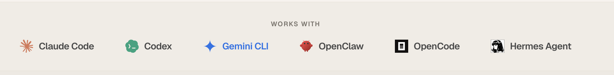

> Explore YC & a16z startups
Search, analyze, and build on startup data from Y Combinator & a16z — 5,800+ companies in one place, now with an offline, agent-friendly CLI.
In Action

Detailed Command Reference
# Installation
# Seeding Data
Pull the latest public YC and a16z datasets into your local SQLite db.
> startup-find seed --source a16z
# Search & Filter
Rich full-text search with structured filtering.
> startup-find companies --batch "W24" --industry "Developer Tools"
> startup-find companies --is-hiring true --country "US"
# Agent / JSON Integration
Get minified, token-optimized JSON designed explicitly for LLM contexts.
{"results":[{"name":"Stripe","industry":"Fintech","batch":"S09"}]}
Features & Commands
(Agent-ready)100% Local
All data lives on your machine in SQLite. Nothing leaves your computer. No accounts, no telemetry.
secureSub-ms Querying
Filter by batch, industry, or hiring status. Full-text search across all company descriptions instantly.
fastAgent-Friendly
Pass --agent for compact JSON output. Clean exit codes for flawless shell scripting and LLM pipelines.
integrateHTTP REST API
Run `startup-find serve` to expose a local HTTP server accessible from Ruby, Go, Node, or curl.
serve